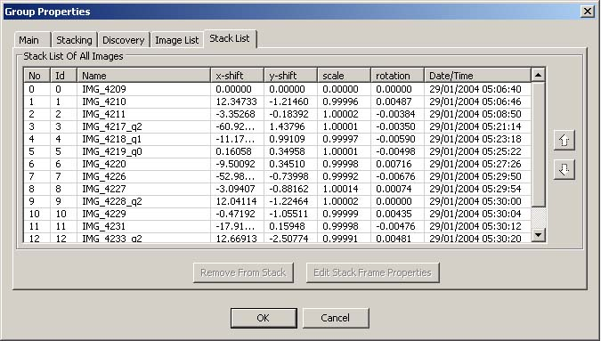

This will automatically register(translate/rotate) and stack your images. Currently supported stacking methods are: Average, Median, Mean-Median, Kappa-Sigma. To configure you need to go in group properties and from there you can setup your stacking list as well as your stacking parameters. Here is still room for optimization in memory usage speed and additional corrections for the auto-registration process. | |
Sample of stacking process - M51 - 14 frames
| |
|
Stacking list in image group properties  | |